Food Bank
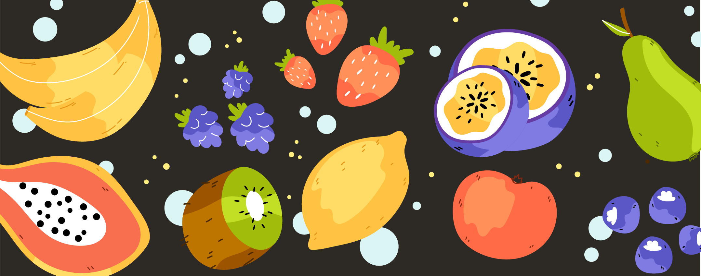1 Abstract
Food waste and hunger have become serious problems in the world. One of the solutions is to donate leftover food to hungry people through food donations. However, due to the lack of convenient donation platforms and food supervision,this problem is still serious. Therefore, design a donation platform that is more convenient for young families and monitor food safety through charities.
Interviews with 371 low-income Toronto families revealed that 75 percent had experienced some food insecurity, but only 23 percent had used a food bank; for most food bank users, food insecurity was a severe and chronic problem (Loopstra and Tarasuk, 2012).
2 Discover the problem
| Food waste |
|---|
| Nearly one-third of food produced for human consumption is lost or wasted, equalling a total of 1.3 billion tonnes of food waste per year (Schanes, Dobernig and Gözet, 2018). |
| Hungry popular |
|---|
| Nearly 14 million people in the UK struggle to get enough to eat (9.7 million adults and 4 million children). The total population of the UK in 2022 will be 68.6 million. |
3 Analyse the problem
There are many ways to reduce food waste and feed the hungry, one of which is food donation.
• User flow:
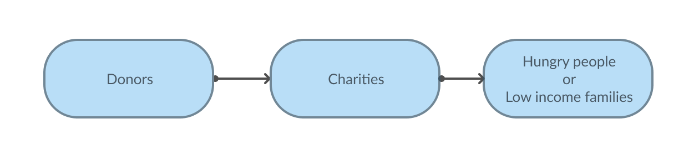• Household / Donor:
Reusing leftovers is considered one of the most effective strategies to combat food waste at the household level(Schanes, Dobernig and Gözet, 2018); the youths waste more than elderly people, above all compared with people aged 65 or over who were found to waste significantly less food than the rest of the population; the process of donation is very complex(De Boeck et al., 2017); food safety, do not know food waste diversion avenues, lack of time and space(Goodman-Smith, Mirosa and Skeaff, 2020)
• Charity:
Food banks have also their own problems: Poor distribution strategies, informality in handling and delivering food, lack of infrastructure, the mismatch between the supply and nutrition needs, among others (Mejia et al., 2015);
• Low-income families:
Interviews with 371 low-income Toronto families revealed that 75 percent had experienced some food insecurity, but only 23 percent had used a food bank; for most food bank users, food insecurity was a severe and chronic problem (Loopstra and Tarasuk, 2012).
4 Existing the Solutions
• Olio
| 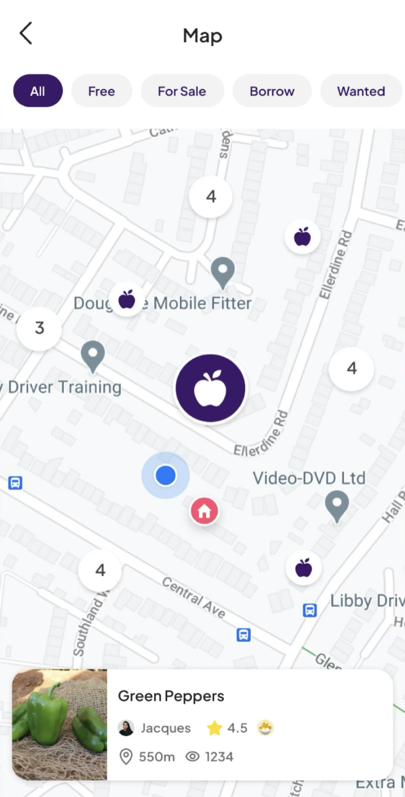 | 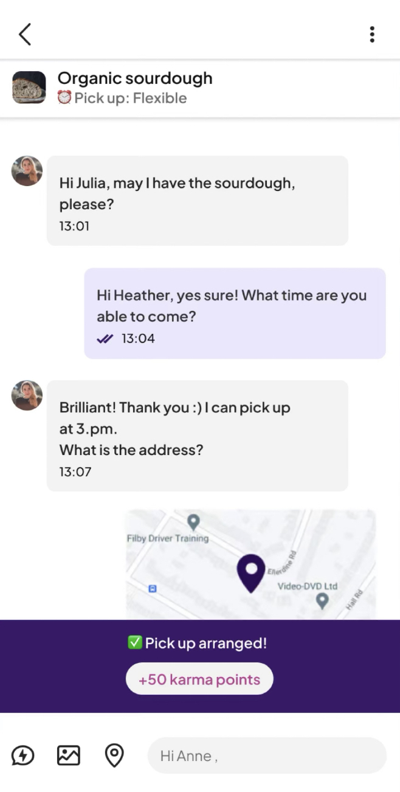 | 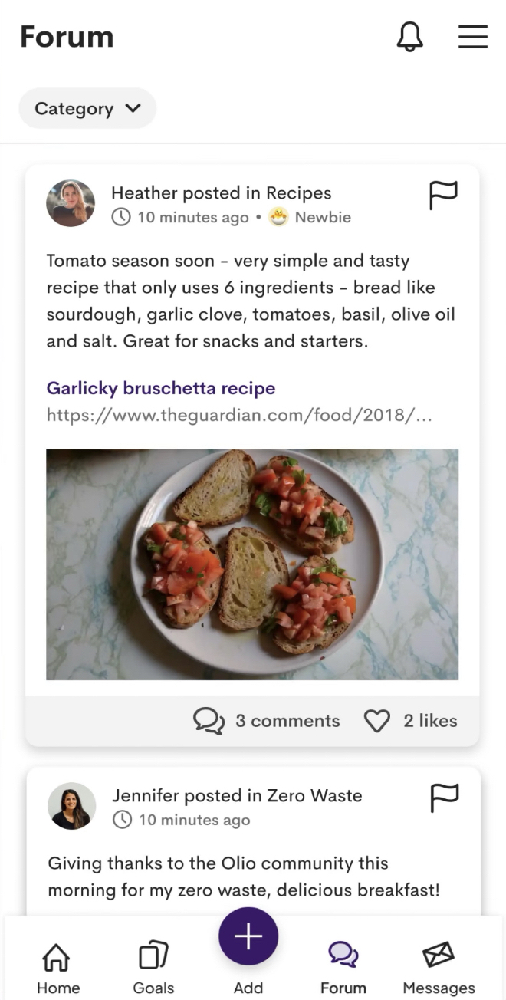 |
This app could help UK residents or businesses share unwanted food to avoid waste. Users can upload food photos and related information.
However, due to the lack of supervision, this software may have food safety problems, and users will worry about it and reduce its use.
• To good to go
| 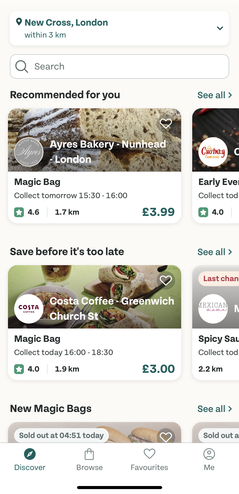 | 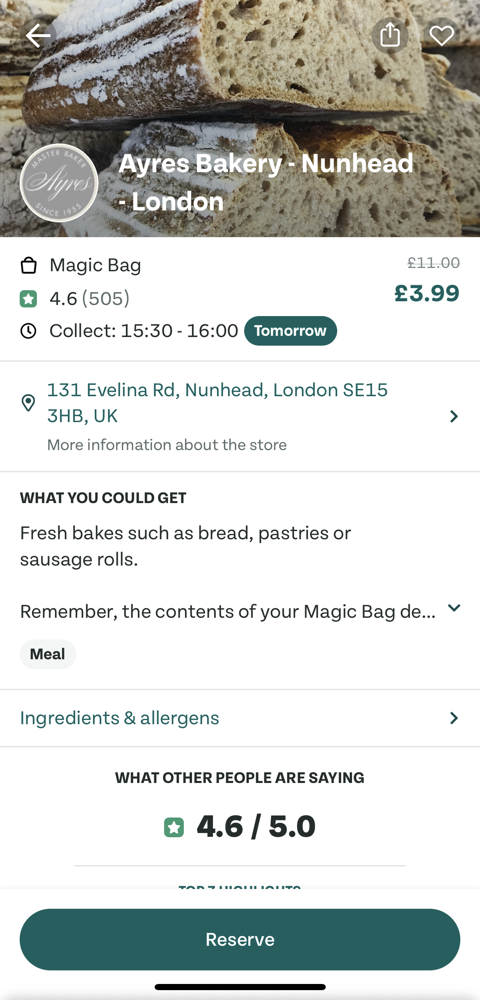 | 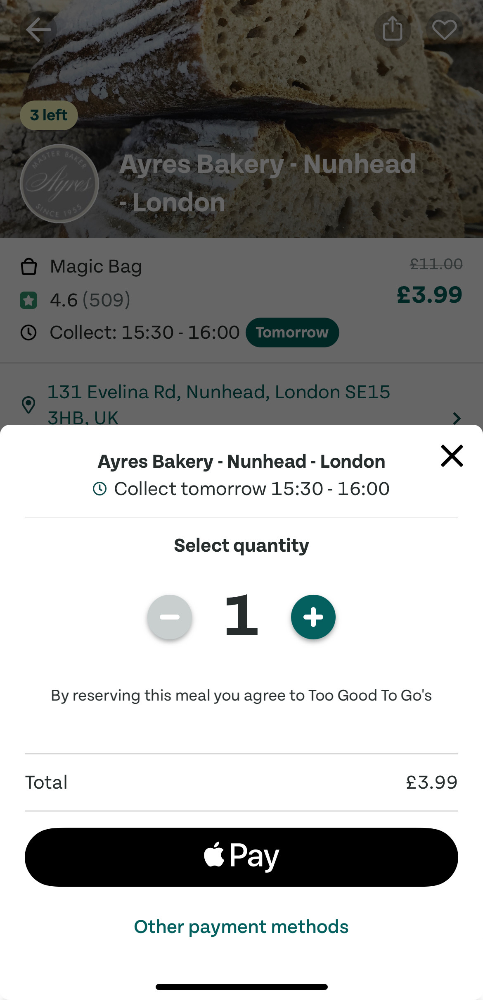 |
This software can provide restaurants with a platform to reduce food waste and mainly address leftover or unsellable food in restaurants. It allows restaurants to upload photos and related information, and allows consumers to buy at low prices.
But it is also burdensome for some low-income users to buy at low prices. At the same time, it cannot provide a channel for sharing food leftovers in the family.
• Flashfood
The software reduces waste by reselling food at a lower price, as well as “not good enough” food. Like the TO GOOD TO GO, Flashfood also faces certain problems, and low-income groups will be discouraged by the price.
• Conclusion
Since young people’s families waste relatively more, the users are defined as young family groups. At the same time, because food safety needs to be considered, charities are included in the design system to control food safety. According to the above problems, design a food donation platform that can provide young people with more convenience, and provide charities with a clear delivery platform for food delivery.
5 Technical support
Since mobile phones are the most widely used technology by human beings in today’s world, at the same time, the target audience is young people, to carry out the most basic tasks, we choose the technology to be a mobile application. Based on the technology in mobile phones, it is possible to create more technological applications for mobile phone software, such as internet access, global positioning systems (GPS), access to data, microphones and cameras, and “… not only to take high-resolution photographs, but also to read QR/barcodes (Teacher et al., 2013).
• Login System
A login system will be required to identify users and distinguish between donors and charity organisations. As part of the technology that is commonly used in software, the login system is always linked to a Google account, a Facebook account or an Apple account, or users can register a username and password in the app to access the service. By creating user accounts, the software can store users’ addresses and information and protect the user’s privacy (shirali-shahreza and Shirali-Shahreza, 2007).
• Location Access
To enable location access, show nearby charities, and navigate to an address, GPS and location services will be required. As indicated by (von Watzdorf and Michahelles, 2010), mobile phone GPS technology allows users to know each other’s locations more accurately (von Watzdorf and Michahelles, 2010). For this, Google Maps will be integrated with the app.
• Camera
The third technology needed is the camera. The phone always comes with a camera lens, but the software requires the user to authorise the camera to capture images, as in the case of the photo uploading application ZoneTag, reviewed by (Ames et al., 2010), which can even add comments and tags to the uploaded photos.
• Central Database
A central database will be required to store all the important information and records, such as the details of the donors and charity organisations, the messages in chats, pictures uploaded, and a lot more. For this purpose, we will use Firebase as the database. As described by Khawas and Shah, Firebase “is a paid service which is a cross-platform solution for messages and notifications”, that “enables the application developer to understand how users are using the application” and also “supports social login provider like Facebook, Google (Khawas & Shah, 2018). Hence using Firebase, login, messaging/chat and notifications features will be supported.
• Confirmation Code and Authenticator
The fifth technology we intend to use is a confirmation code generator and authenticator, as in the Deliveroo app. This code will verify and match if the organisation is collecting from the respective/correct donor who chose to hand over their meal to them. Similarly, this technology is used for food deliveries to prevent food loss. As shown in Figure 1, in Deliveroo, when a delivery exceeds twenty pounds, riders must enter a two-digit electronic code provided by the customer to confirm their delivery (“Deliveroo | Introducing customer confirmation codes,” n.d.).
6 User Journey

• For donors
After logging in to the software, the user uploads the information of the food that needs to be donated, and then donates according to the type of food that different charities need, and then selects the delivery method to complete the food donation.
• For riders
Riders receive order information Accept food and deliver to the charity.
• For charities
The charity publishes the food demand, receives and checks the food donation information from the donor, and the rider or donor starts to deliver the food after approval.
7 Low-fidelity
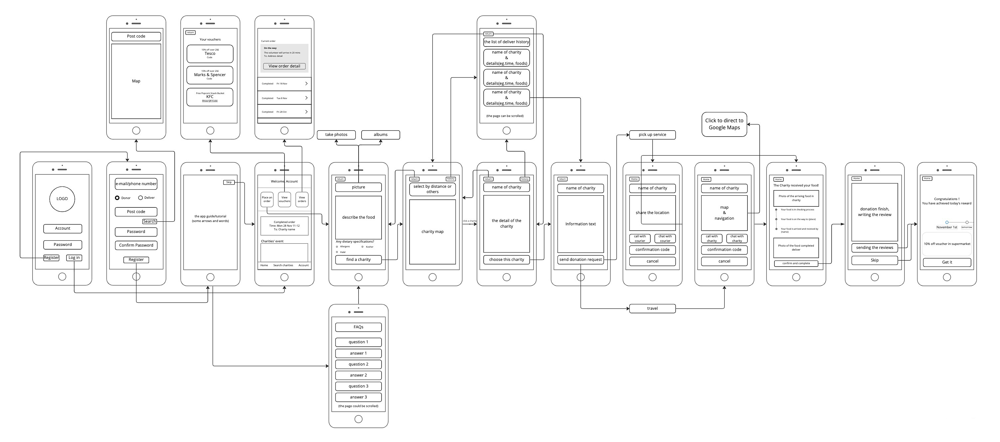8 Usability Test
• For the Donors
User stories:
User story 1: As someone who ends up buying extra groceries, way more than the required quantity, I want to donate six boxes of grapes, four bags of lettuce, five packets of corn, two boxes of chicken legs, and 3 loaves of bread, so that I do not have to throw them in the garbage as they are about to expire.
User story 2：I have placed a donation order and chosen the pickup service by the charity organisation. The representative will arrive in 20 minutes. I exited the app and started watching YouTube on my phone. Later when the representative arrives, I need to quickly access the confirmation code for the donation order.
User story 3: I am at the checkout counter at Waitrose and need to quickly access the discount voucher I earned as a reward in exchange for a donation, so that I can scan the QR code and utilise my discount.
| 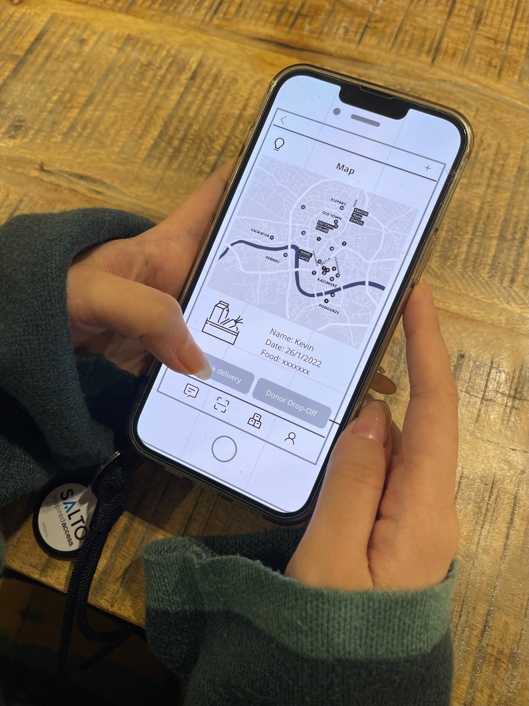 | 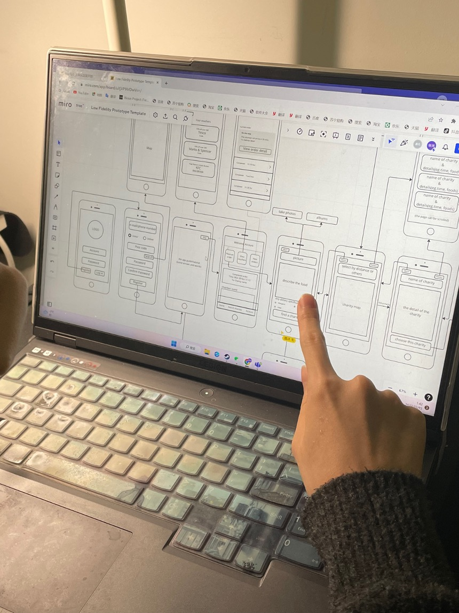 |
Users problem:
Problem 1: They could not find the specific room number in the registration step.
Problem 2: They found a specific charity difficult.
Problem 3: They find it difficult to describe donated food.
Problem 4: They were hard to find the specific voucher.
| 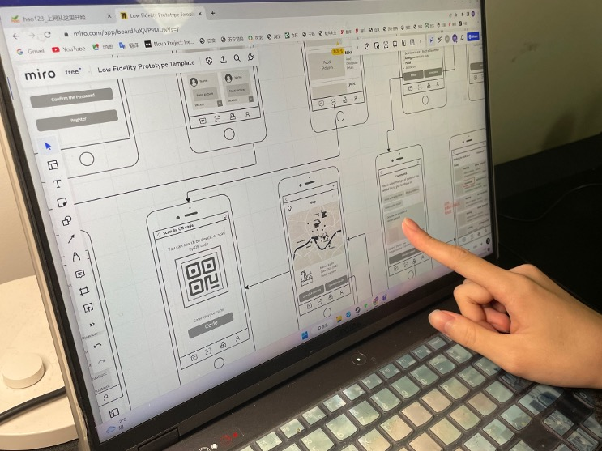 |
Changings:
Changing 1: Add drop-down menu and map.
Changing 2: Adding a filter function and a search function to quickly find a specific charity.
Changing 3: Adding food categories, packaging and any dietary specifications.
Changing 4: Adding a filter function to find the specific voucher.
• For the Charities
User story:
Story 1: As a representative of a charity organisation, I want to reject a donation request by a donor because the picture and description added by the donor were unclear and not satisfactory.
Story 2: As a representative of a charity organisation who is responsible for the execution of a donation, I want to upload a picture showing the donation is complete so that the donor can confirm the successful completion of the donation.
Story 3: As a representative of a charity organisation, I am travelling to the donor’s given address to collect their donation, but I can’t seem to find their exact location, so I need to call them to help me reach them.
Users problem & Changing:
Users’ problem & Changing 1: They wanted to directly edit the image to point out the food-related problems.
Users’ problem & Changing 2: They could not find the place to upload process to donors.
Users’ problem & Changing 3: They could not find the options to call the doner side phone when they lose the way.
9 High-fidelity
• Interface for the Donors

|

|
• Interface for the Charities

|

|
10 Conclusion
Limitation
The charity’s tests did not find actual charity staff, so there may be limitations.